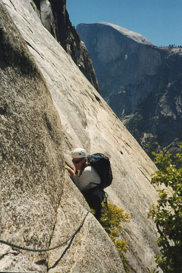
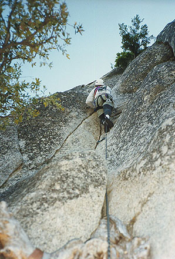
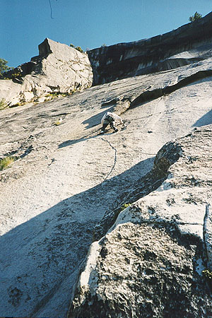
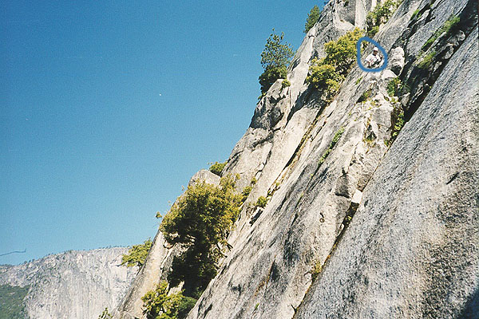
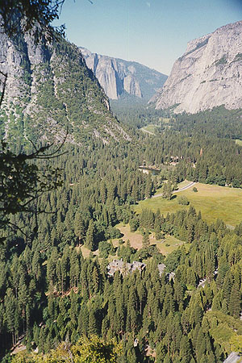

The Royal Arches
- The Royal Arches (5.7, A0, III)
- June 17, 1999
16 Pitches! Wow!
I lay in the dark, too excited to sleep before our first climb in Yosemite. Shifting in my sleeping bag, I earned a few curses from Jeff when I pointed out that his sleeping area was directly exposed to rockfall from the granite face above. Finally I relaxed bit by bit, my first night of many among the ants and beetles. The low murmur of water, then sleep.
I had spent enough rainy evenings at home reading about this route that it had become mythical. The Royal Arches, first climbed in 1939 by M. Harris, K. Adam, and K. Davis. By today’s standards, it is an easy climb, which I appreciated. What caught my imagination was the length. The longest climb I’d done was 4 rope lengths. Well this was 16 rope lengths! I wondered how long it would take, and what it would feel like to cling to a wall for that long. I felt like I had been invited to ride in a UFO.





Jeff freaked out when I woke him at the crack of dawn. This route is one of the 50 classic climbs of North America, and I had visions of jangly hordes tailgating me on a nervous lead. All day he complained about being awakened from his “best sleep in weeks!” Sigh. Actually, I was really eager to climb, and I took the first lead, shimmying up a chimney to a chockstone, and then a tree. Jeff came up quick, and we continued on easier terrain. We simul-climbed for 2 leads, and the first of the horde arrived - two men practically soloing.
But there was no horde - we didn’t see anyone else until the descent! You can still get lucky in Yosemite!
Jeff led a 5.7 pitch with some great liebacking. It was tough, and sobering - Yosemite 5.7 really is harder than 5.7 at a place like Leavenworth.
We were flying, mainly due to Jeff’s efficiency. His ethic is to always stay busy, doing everything possible to avoid duplicate work. He was a good teacher too, repeating axioms until I finally got them. He good-naturedly never ignored a mistake. At the same time, he felt pretty bad about getting pedantic on me. I appreciated both sides of the coin.
Much of the climb is a pleasant blur to me now. We would occasionally look at the valley floor where we started. Already the trees looked like toys. Above, the “Arches” overhung fantastically, and our route would veer to the left to sneak by. We couldn’t believe we were there, and having tons of fun.
We reached the 5.9 pitch. I led up to the edge of a smooth-as-glass slab of granite which a more daring soul would smear across to a ledge on the other side. I, more prudent, overcame this with the help of a fixed rope. I clipped a carabiner to it, and made two or three swings across the slab, finally catching a hand on the ledge, and pulling myself on. Continuing on a thin and wet traverse, I reached a point to belay Jeff up and across.
Nobly, he planned to free the section, and after a few ventures onto the slab to test his sticky rubber, he did it. Of course it looked easy. “You just have to trust your feet completely,” he said.
After this he led up a difficult pitch that ends by climbing through a tree wedged between cracks, then a tenuous traverse around a bulging arete. Jeff got a picture of me carefully edging around this. The look on my face is me realizing I’m not on belay because he’s taking a picture! (just kidding…)
Tiring a little, I continued up an easy crack that widened to a sort of canal. I ran the whole rope out up to a shady tree at a ledge. Here, we thought we were off route, and Jeff went exploring, finally setting up an insecure belay he made me promise not to fall on. That was a promise I could keep, and when I reached the gritty ledge he stood on, I traversed around a corner and soon was anchored at the end of the 16th pitch. The route actually continues for another pitch on an exciting traverse, but rather than walk off, we had opted to rappel from here. We had two ropes, and so, trusting to find a sturdy anchor below, cast off an overhanging cliff that became a grand granite slab with a waterfall on one side.
Jeff started all the rappels. He cast off from the belay, while I hung from a sling and enjoyed the fantastic scene. A gnarled tree jutted out below, and he worked around it. Coming to a 3-bolt rappel station just below the tree, he continued on. I followed, and we ended up in an amazing spot, pasted onto a vertical prairie of granite. We pulled the rope.
That is, we pulled until it stuck. Then we pulled some more.
So this is when the day started to become ominous and negative. We were able to retrieve one rope but the other just wouldn’t come down, no matter how hard we pulled. We spent half an hour at this, hoping another party would come along (one minute we hate crowds, but they’re never around when you want them!).
Finally we gave up, and decided to attempt getting down with one rope, abandoning the good rope to the elements. At $120, this is not something you do lightly, but we were parched and baking on the rock, and there was no one in sight. We might have to climb the route again the next day to get it, alas!
We had an anxious journey, sometimes leaving webbing on sturdy shrub anchors, our progress painfully slow. Finally we reached a broad ledge, and Jeff had the idea to wait there, figuring someone would come along. Lying under a shady tree, we waited and watched the face above. We couldn’t even see the rope, but we did finally see two specks, and hear their tinny voices. We hollered, asking them to retrieve the rope, and they seemed to understand. Yes!
The figures grew larger, and arrived after our nap. Introducing ourselves, we thanked them. As it turns out, the rope had wrapped itself just once around the tree. We had already been berating ourselves for not rapping from just below the tree. Lesson learned…
Continuing down with this pair, we all moved quickly, and were soon back on solid ground. It must have been around 4:30, and we shared beers with our new friends, talked about climbing, and reveled in the afterglow of a top rate Yosemite adventure! We planned the next day’s adventure over a Mexican dinner in the cafeteria. Back among the ants, sleep came on a borrowed patch of pine needles in Camp IV.